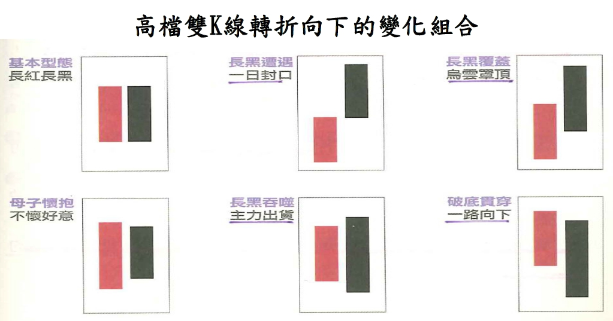
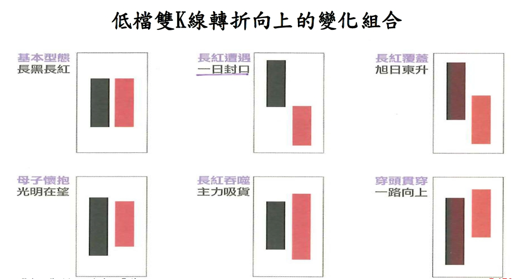

K棒交易策略
K線
當收盤價>開盤價，我們稱為紅K(陽線)；當收盤價<開盤價，我們稱為黑K(陰線)
每一K線皆由「實體」和「影線」兩部份組成，實體比影線粗，影線依附於實體的上下兩端。其中實體部份記錄當天的開盤價和收盤價，影線部份則記錄當天的最高價和最低價。
影線又分為「上影線」和「下影線」兩種，以陽線為例，陽線的上影線表示最高價和收盤價的差距，下影線表示最低價和開盤價的差距，陰線之上下影線則以此類推。

K棒組合
- 以兩根或多根K棒組合做為股票進場的交易策略
【多頭訊號】

【空頭訊號】

長紅吞噬回測實作
在投資領域中，技術分析線圖上常出現長紅吞噬的K棒組合，有些投資人認為這代表該檔股票未來會有一波多頭的走勢，原因是在第t天時一根紅K棒回補了前一天所有的損失，常被視為是股價要反轉的跡象。在這篇文章中，將以台灣上市公司的歷史股價資料，示範如何以R軟體來回測驗證這個交易想法。
若回測的交易日出現常紅吞噬的K棒組合，則以隔日的開盤價進場，出場則是定在買進後任一時點損失超過10%時移動停損，以跌破當日的收盤價作為停損出場。